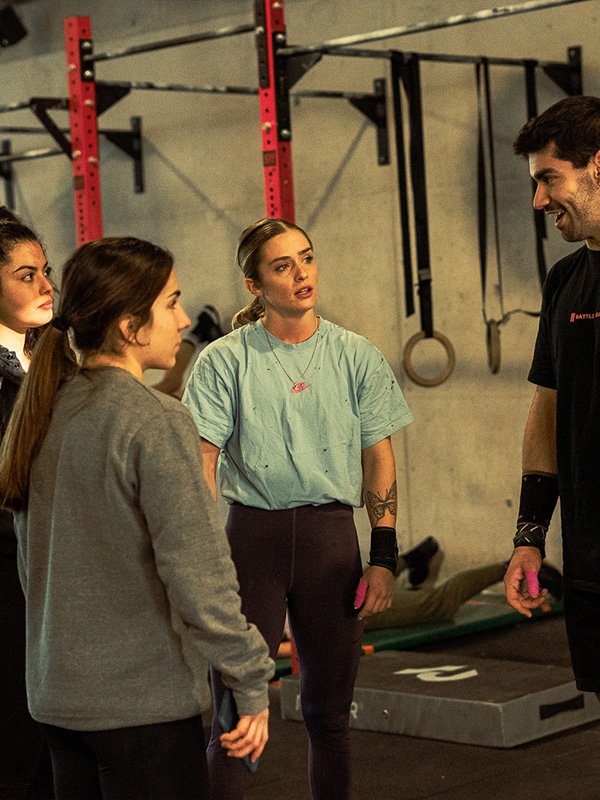
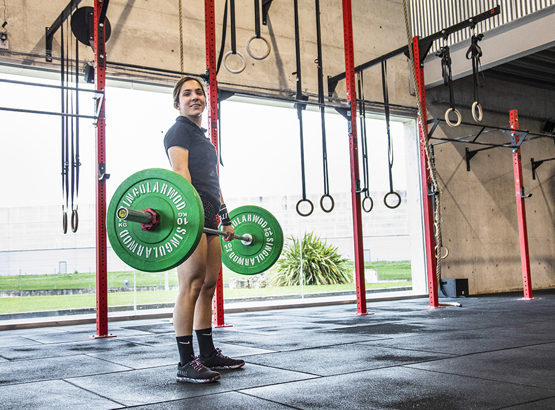
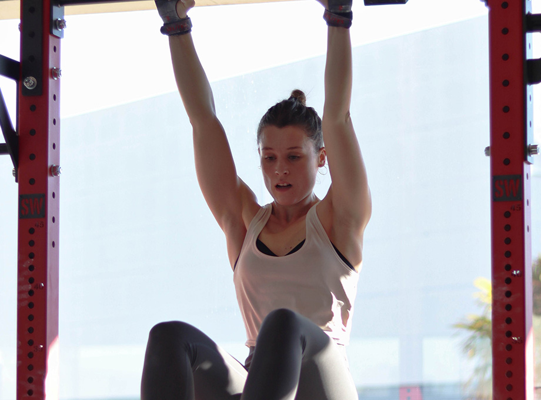
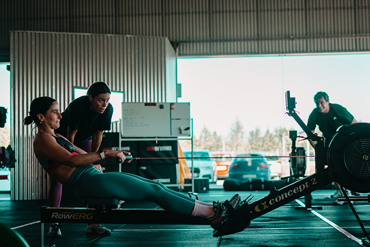
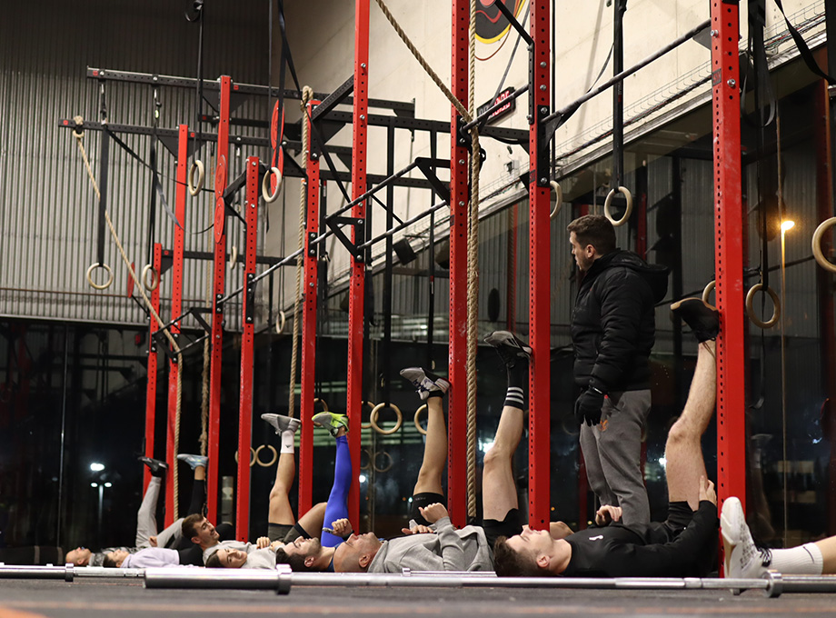

Phoenix Box
El corazón del centro. CrossFit, halterofilia, gimnásticos, strength y Open Box, con sesiones guiadas por coaches y la intensidad del entrenamiento de alto rendimiento.
Ver especialidades del Box
Un centro deportivo dedicado a la salud y el fitness en el Polígono de Berroa, a un paso de Tajonar y Pamplona. CrossFit, halterofilia, entrenamiento funcional y un equipo de coaches que adapta cada sesión a tu nivel y a tu objetivo.

Phoenix Training Box es un centro deportivo dedicado a la salud, el bienestar y el fitness. Nuestra misión es dar un servicio de alta calidad, adaptando la metodología y el entrenamiento funcional a las necesidades de cada persona, sea cual sea su punto de partida.
Disponemos de ambientes diferenciados que nos permiten ajustar la oferta a la demanda de cada cliente, de la forma más individualizada y personal posible.
Dos ambientes pensados para objetivos distintos. Elige el que encaja contigo o combínalos: el equipo te orienta en tu primera visita.

El corazón del centro. CrossFit, halterofilia, gimnásticos, strength y Open Box, con sesiones guiadas por coaches y la intensidad del entrenamiento de alto rendimiento.
Ver especialidades del Box
Entrenamiento funcional en grupos reducidos. Además del funcional puedes elegir HIIT, boxeo, pilates y recovery, con un acompañamiento cercano y personalizado.
Ver especialidades BoutiqueDel WOD diario a la técnica de halterofilia o la movilidad. Estas son algunas de las disciplinas que encontrarás en Phoenix Box.
El entrenamiento funcional de alta intensidad que combina fuerza, gimnásticos y cardio en cada sesión, siempre escalable a tu nivel.
Ver CrossFit
Técnica de arrancada y dos tiempos para mejorar tu fuerza, tu potencia y tu rendimiento dentro y fuera del box.
Ver halterofilia
Programación específica de fuerza y barbell cycling para construir una base sólida y progresar con seguridad.
Ver strength
Dominio del propio cuerpo: dominadas, muscle-ups, pino y control corporal para desbloquear nuevos movimientos.
Ver gimnásticos
Capacidad aeróbica y resistencia. Mejora tu motor cardiovascular para aguantar más y recuperar mejor.
Ver endurance
Amplitud de movimiento y prevención de lesiones. La pieza que sostiene todo lo demás y mantiene tu cuerpo sano.
Ver movilidadNuestra misión es dar un servicio de alta calidad, adaptando el entrenamiento a la demanda de cada cliente de la forma más individualizada posible.
Empezar es sencillo. Te acompañamos desde la primera sesión para que entrenes con técnica, confianza y resultados.
Ven a ver el centro y reserva tu primera sesión. Resolvemos tus dudas y vemos qué espacio encaja con tu objetivo.
Un coach te guía en cada movimiento y escala los ejercicios a tu nivel, sin importar de dónde partas.
Eliges tu tarifa o tu bono y avanzas a tu ritmo, con el seguimiento del equipo y los servicios de recuperación del centro.
El rendimiento también se construye fuera del WOD. En Phoenix Box puedes apoyarte en servicios de fisioterapia, masaje, nutrición y rehabilitación para entrenar mejor, recuperarte antes y prevenir lesiones.
Un acompañamiento integral para que el entrenamiento sume salud, no solo intensidad.
No. La mayoría de quienes empiezan en Phoenix Box nunca habían hecho CrossFit ni entrenamiento funcional. Las sesiones se adaptan a tu nivel y los coaches corrigen la técnica desde el primer día para que progreses con seguridad.
Phoenix Box agrupa el CrossFit y las especialidades de fuerza, halterofilia y gimnásticos. Phoenix Boutique es el espacio de entrenamiento funcional en grupos pequeños, con HIIT, boxeo, pilates y recovery. Puedes combinar ambos según tu objetivo.
Estamos en el Polígono Industrial Berroa, número 26, 31192 Aranguren (Navarra), a pocos minutos de Tajonar y de Pamplona. Tienes el mapa y las indicaciones en la página de Contacto.
De lunes a jueves abrimos de 06:30 a 22:00, los viernes de 06:30 a 21:00, los sábados de 08:00 a 12:00 y los domingos de 09:00 a 12:00. El horario concreto de cada clase está en la página de Horarios.
Sí. Phoenix Box cuenta con servicios complementarios de fisioterapia, masaje, nutrición y rehabilitación para acompañar tu entrenamiento y tu recuperación.
Estamos en el Polígono de Berroa, en Aranguren (Tajonar), a pocos minutos de Pamplona. Escríbenos y reservamos tu primera sesión.